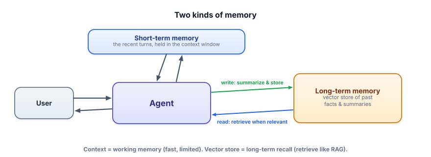

Memory
An agent that forgets everything between steps — or between sessions — can’t accomplish much. Memory is how an agent holds onto what it has learned, despite a small context window. And the good news: you already know the core trick. It’s RAG, pointed at the agent’s own history.
Why memory is a real design problem
Recall from Track 1.4 that the model only knows what’s in its context window right now, and that window is finite. For a long agent run — dozens of steps, a multi-turn conversation, a task spanning days — the full history won’t fit, and re-sending everything is expensive and invites “lost in the middle.” So you need a strategy for what to keep in the window, what to store outside it, and how to bring the right past information back when it’s relevant. That strategy is memory.

Short-term memory is the information currently in the context window — the recent conversation and the current task’s trace. Long-term memory is information stored outside the model (a database or vector store) that you retrieve and inject when relevant. Within long-term memory, episodic memory recalls specific past events (“last time, the user preferred email”), while semantic memory holds distilled facts (“the user’s timezone is IST”). Writing to memory and reading from it are deliberate steps you build.
The two techniques you’ll actually use
Summarization (managing short-term memory). When the conversation grows past a budget, compress older turns into a running summary and keep recent turns verbatim. The summary preserves the gist while freeing tokens — a controlled forgetting.
Vector memory (long-term recall). Store facts/summaries as embeddings; when a new query arrives, retrieve the most relevant memories and add them to the context. This is RAG (Track 3) with the knowledge base being the agent’s own history — and it’s how an assistant “remembers” your preferences across sessions.
Both techniques, minimal. Summarize to fit; store and retrieve to recall.
import numpy as np, ollama
from sentence_transformers import SentenceTransformer
embed = SentenceTransformer("all-MiniLM-L6-v2")
# --- short-term: summarize old turns when the convo gets long ---
def compress(old_turns):
text = "\n".join(old_turns)
return ask(f"Summarize this conversation in 3 bullet points, keeping key facts:\n{text}")
# --- long-term: a tiny vector memory you write to and read from ---
memory, mem_vecs = [], None
def remember(fact):
global mem_vecs
memory.append(fact)
mem_vecs = embed.encode(memory, normalize_embeddings=True)
def recall(query, k=2):
if not memory: return []
q = embed.encode([query], normalize_embeddings=True)[0]
top = np.argsort(mem_vecs @ q)[::-1][:k]
return [memory[i] for i in top]
remember("User prefers metric units and replies in the morning.")
remember("User is based in Bengaluru (IST).")
print(recall("what timezone should I schedule for?")) # -> ["User is based in Bengaluru (IST)."]That’s the whole idea: summarize to keep the window lean, store and retrieve to recall the right thing later. Long-term memory is just RAG whose corpus is the agent’s experience.
Watch the model forget
Shrink the context budget and watch the earliest turns fall out of the conversation. This is exactly what users experience as the assistant “losing the plot”.
- Short-term memory = the context window (fast, limited); long-term memory = an external store you retrieve from.
- Summarize old turns to fit the window; store + retrieve facts for cross-session recall.
- Long-term memory is RAG over the agent’s own history — the same embed/retrieve you already know.
- Distinguish episodic (past events) from semantic (distilled facts) memory.
- Memory is a deliberate write/read design, not something that happens for free.
A user tells your assistant “I’m vegetarian” in week 1. In week 3 they ask for dinner ideas and it suggests steak. What’s the fix?
1. Classify as short-term or long-term memory: (a) the last 3 messages, (b) “the user’s account ID,” (c) the current task’s tool trace, (d) “last month the user complained about slow support.”
2. Why summarize old turns instead of just dropping them when the window fills?
3. What could go wrong if you store everything a user ever says in long-term memory and retrieve aggressively?
▸ Show solutions & reasoning
1. (a) short-term (recent context), (b) long-term (a durable fact), (c) short-term (this run’s working state), (d) long-term (a past episode worth recalling). The line is roughly “needed for this immediate step” (short-term) vs “might matter again later” (long-term).
2. Dropping old turns loses information the agent may still need (a fact established early, a decision made). Summarizing preserves the gist and key facts in far fewer tokens, so you free window space without amnesia. It’s controlled forgetting — keep the essence, discard the verbatim bulk.
3. Several failures: the memory store fills with noise, so retrieval surfaces irrelevant or stale facts that derail the agent; privacy risk grows (you’re hoarding personal data — Track 7); and contradictions accumulate (an old preference conflicting with a new one). Good memory is curated: store distilled, useful facts; prune or expire stale ones; and retrieve precisely, not greedily.
The hard part of agent memory isn’t storing — it’s deciding what’s worth remembering and when to surface it. Naively dumping every message into a vector store creates a swamp: retrieval returns near-duplicates, outdated facts, and irrelevant chatter that crowds the prompt. Mature memory systems do active curation: they extract salient facts (preferences, decisions, entities) rather than raw transcripts, deduplicate and update them (a new timezone overwrites the old), attach timestamps so recency can be weighed, and sometimes maintain a structured user profile alongside free-text memories. Retrieval then pulls a small, high-quality set rather than a noisy haystack.
Two more realities. First, memory inherits every RAG concern — chunking, embedding quality, retrieval evaluation — because it is RAG; if recall is poor, the agent “forgets” even though the fact is stored. Second, memory is where privacy and safety get serious: you’re persisting user data across sessions, so you need consent, retention limits, the ability to delete, and care that one user’s memories never leak into another’s context (Track 7). Treat the memory store as sensitive production data, not a convenience cache. Done well, memory is what makes an assistant feel like it actually knows you; done carelessly, it’s a liability that also gives worse answers.
Your agents can reason, act, plan, and remember. But wiring each tool and data source by hand is tedious and non-standard. A new protocol fixes that. Next: MCP (Model Context Protocol).